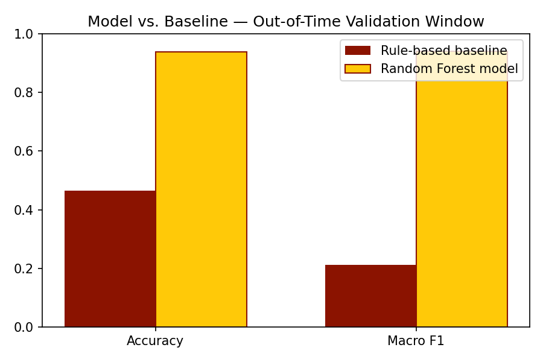
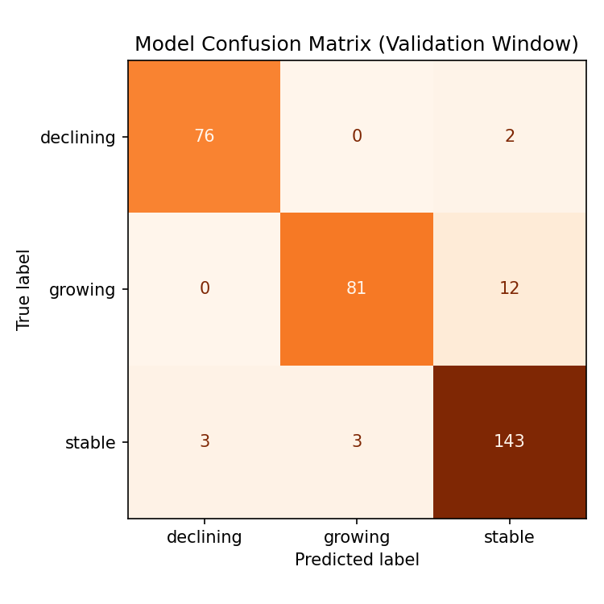
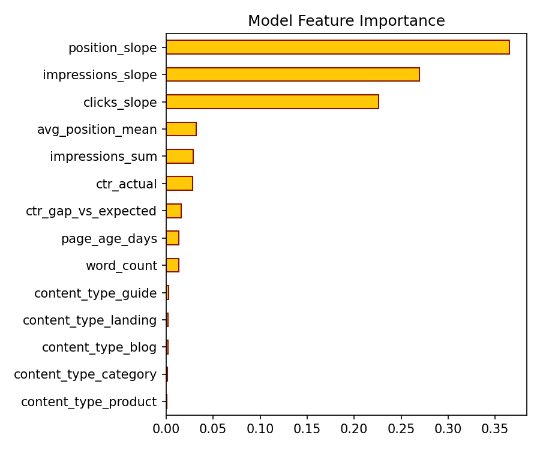
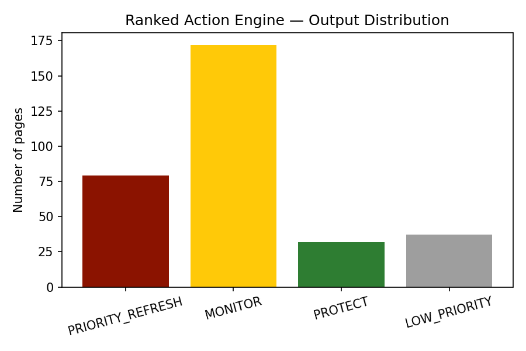

Title & Abstract
Which pages should a content team refresh this cycle, and why? This capstone builds a page-level refresh and content-opportunity scoring pipeline on daily search-performance data. Page history is aggregated with DuckDB into position, click-through-rate, and impression trend features over a fixed window; a Random Forest classifier then predicts each page's forward click momentum (growing / stable / declining) on a strictly later, out-of-time validation window, and is compared against a simple single-signal baseline. The model reaches 93.8% accuracy and a macro-F1 of 0.939 on the held-out window, against a baseline of 46.6% accuracy and 0.212 macro-F1 — a large, reproducible lift on the identical split. Predictions are combined with explainable, rule-based reason codes into a ranked action list (PRIORITY_REFRESH → MONITOR → PROTECT → LOW_PRIORITY) that a content team can act on directly, with every recommendation traceable to the signals that produced it.
Introduction / Problem Statement
Content and SEO teams routinely manage far more published pages than they can manually re-review every cycle. Left unattended, declining pages keep losing visibility while genuinely strong pages sit unprotected from competitive or technical erosion. The decision this work supports is operational, not academic: given only signals available today, which pages deserve a refresh this cycle, which are safe to leave alone, and which top performers deserve active protection?
This falls under the Refresh / Content Opportunity Scoring lane of the Search Ranking & Discoverability Capstone: score pages that are growing, declining, recovering, or worth review, and output a ranked action engine with reason codes rather than a single opaque score.
Data
Public-safe This paper reports results from a page-level, daily search-performance panel: 320 pages × 180 days (page_id, date, impressions, clicks, avg_position, content_type, word_count, page_age_days).
Excluded from modeling: a synthetic-only true_regime debug column, used solely offline to sanity-check that the derived label agrees with the simulation's ground truth — never passed to the model.
Methodology
Label definition
momentum_class ∈ {growing, stable, declining}, derived from the percent change in a page's total clicks between a feature window and a strictly later label window, thresholded at ±15%.
Features
- Average position and position trend slope (DuckDB REGR_SLOPE)
- Impression and click trend slopes
- Actual CTR vs. an expected-CTR-by-position curve (ctr_gap_vs_expected)
- Word count, page age, content type
Baseline
A single-signal rule using only the sign/magnitude of the position trend slope — the bar the learned model has to clear to justify its added complexity.
Model
A scikit-learn RandomForestClassifier (300 trees, max depth 6, class_weight="balanced") in a pipeline with one-hot encoding for content type.
Validation design — leakage control
An out-of-time split, not a random row split:
| Window | Feature days | Label days |
|---|---|---|
| Train | 31 – 90 | 91 – 150 |
| Validation | 61 – 120 | 121 – 180 |
The validation feature window begins only after the training feature window ends, and each label window is strictly later than its own feature window — so no row ever sees its own future, and the validation cohort is scored on a period the training process never touched.
Results


| Metric | Baseline | Model |
|---|---|---|
| Accuracy | 0.466 | 0.938 |
| Macro F1 | 0.212 | 0.939 |


Limitations & Honest Framing
- Directional, not causal. These are decision-support signals. Nothing here claims to prove why a ranking moved or to reverse-engineer a search engine's algorithm.
- Synthetic data stand-in. The reported accuracy figures describe how well the model recovers the synthetic simulation's own patterns, not real-world search behavior. The pipeline, feature set, and out-of-time validation design transfer directly to the real warehouse; the specific numbers do not.
- Threshold is a modeling choice. The ±15% click-growth cut for growing/declining is a reasonable default a content team should be free to tune.
- Out-of-time, not out-of-page. The same pages appear in both windows at different times, validating generalization across time, not across entirely unseen pages. A production rollout should also spot-check performance on newly published pages.
Ranked Recommendations (Action Playbook)
Every page receives one primary action plus one or more explainable reason codes, so the ranking is auditable rather than a black box:
- 1 PRIORITY_REFRESH — predicted declining, or predicted stable with a CTR gap suggesting an easy fix. Review first.
- 2 MONITOR — predicted growing but not yet a top performer, or stable without a clear CTR gap.
- 3 PROTECT — predicted growing and already high-visibility. Leave the content alone; watch for erosion.
- 4 LOW_PRIORITY — predicted stable and low-visibility; not worth cycle time right now.
Top of the ranked list on the validation cohort (full list in outputs/ranked_recommendations.csv):
| Rank | Page | Action | Confidence | Reason codes |
|---|---|---|---|---|
| 1 | page_0126 | PRIORITY_REFRESH | 0.92 | high_visibility_page |
| 2 | page_0196 | PRIORITY_REFRESH | 0.92 | no_strong_signal |
| 3 | page_0155 | PRIORITY_REFRESH | 0.91 | no_strong_signal |
| 4 | page_0026 | PRIORITY_REFRESH | 0.91 | no_strong_signal |
| 5 | page_0233 | PRIORITY_REFRESH | 0.90 | high_visibility_page |
Reproducibility
- Weekly assignment notebooks: work/01_data_intake_and_eda.ipynb, work/02_duckdb_feature_aggregation.ipynb, work/03_baseline_and_model.ipynb
- Capstone notebook: work/capstone_refresh_opportunity_scoring.ipynb
- Shared library: src/data_gen.py, src/features.py, src/scoring_model.py, src/ranking_engine.py, src/make_figures.py
- Regenerate everything: python src/data_gen.py && python src/make_figures.py
- Full repository: github.com/<your-denmarkntagomata>/Den_Search_Ranking_Discoverability_Capstone (update this link after you push — see README)
Acknowledgments & Data Credit
Built on the FlyRank ML Internship dataset — flyrank.ai. This deployed build substitutes a schema-matched synthetic dataset for the gated real warehouse; see the Data section above for details and the README for how to re-run this same pipeline against the real data.